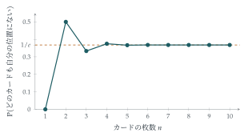

STEP II 2016、第12問
先に進む前に問題を読んでおこう。問題は STEP Support Programme の問題データベースにある： step.maths.org/questions/16-s2-q12
導入
11人のサッカーチームが大急ぎで着替え、ユニフォームを無作為につかみ取ったとする。誰ひとり自分のユニフォームを着ていない確率はいくらか。では、それが50人の選手団だったら、あるいは100万人の群衆だったらどうか。間違える人が増えるのだから確率は上がるのだろうか。それとも、偶然正しいものを取る人も増えるのだから下がるのだろうか。驚くべきことに、確率はほとんど変わらない。5人以上であれば、その確率は \(1/e \approx 0.368\) との差が0.5パーセント以内に収まるのである。
これは組合せ確率論（combinatorial probability）における最古の問題であり、1708年にピエール・ド・モンモール（Pierre de Montmort）が problème des rencontres（一致の問題）として提起したものである。本問はこれを包除原理（inclusion–exclusion principle）、すなわち重なり合うものを数えるための道具を用いて解く。そしてその答えは、数学において \(e\) が現れる最も意外な場面のひとつなのである。
取りかかる前に
\(n = 3\) の場合を試してみよ。カード \(1, 2, 3\) の並べ方6通りをすべて書き出し、どのカードも自分の位置にないものがいくつあるか数えよ。根気があれば、\(n = 4\) の場合も試してみよ（並べ方は \(24\) 通りある）。
\(n = 3\) のとき、どのカードも自分の位置にないのは \(231\) と \(312\) だけであるから、確率は \(\frac26 = \frac13\) である。\(n = 4\) のときは \(24\) 通りのうち \(9\) 通りがそのような並べ方であり、確率は \(\frac38 = 0.375\) となる。どのカードも元の位置にない並べ方を完全順列（derangement）という。
順を追って解く
段階 1 3つの事象に対する包除原理
2つの事象に対する公式が使えるように、\(A \cup B \cup C\) を2つの事象の和として表すにはどうすればよいか。
\(A \cup B\) をひとつの事象とみなし、それと \(C\) に公式を適用すると \[\mathrm{P}(A \cup B \cup C) = \mathrm{P}(A \cup B) + \mathrm{P}(C) - \mathrm{P}\bigl((A \cup B) \cap C\bigr).\] ここで \((A \cup B) \cap C = (A \cap C) \cup (B \cap C)\) であり、公式をもう一度適用すると \(\mathrm{P}\bigl((A \cap C) \cup (B \cap C)\bigr) = \mathrm{P}(A \cap C) + \mathrm{P}(B \cap C) - \mathrm{P}(A \cap B \cap C)\) となる。\(\mathrm{P}(A \cup B)\) も展開して項を整理すれば、結果が得られる。■
4つの事象についても同じパターンが続く。4つの単独の確率を足し、6つの2つずつの共通部分を引き、4つの3つずつの共通部分を足し、最後に \(\mathrm{P}(A \cap B \cap C \cap D)\) を引けばよい。
段階 2 各確率
カード \(i\) が位置 \(i\) にあるとき、残りのカードの並べ方は何通りあるか。カード \(i\) と \(j\) がともに固定されているときはどうか。
並べ方は全部で \(n!\) 通りあり、どれも同様に確からしい。カード \(i\) が位置 \(i\) に固定されているとき、他の \(n - 1\) 枚のカードはどのような順でもよいから、\((n - 1)!\) 通りである。したがって \[\begin{gathered} \mathrm{P}(E_i) = \frac{(n - 1)!}{n!} = \frac{1}{n}, \qquad \mathrm{P}(E_i \cap E_j) = \frac{(n - 2)!}{n!} = \frac{1}{n(n - 1)}, \\ \mathrm{P}(E_i \cap E_j \cap E_k) = \frac{(n - 3)!}{n!} = \frac{1}{n(n - 1)(n - 2)}. \end{gathered}\] 一般に、指定された \(k\) 枚のカードがすべて自分の位置にある確率は \(\frac{(n - k)!}{n!}\) である。
段階 3 足し合わせる
\(\mathrm{P}(E_1 \cup \cdots \cup E_n)\) に対する包除原理の式において、\(k\) 個の事象の共通部分を含む項はいくつあり、その合計はいくらか。
\(k\) 個の事象の選び方は \(\binom{n}{k}\) 通りあり、それぞれの共通部分の確率は \(\frac{(n - k)!}{n!}\) である。よって \(k\) 重の項の合計は \[\binom{n}{k}\frac{(n - k)!}{n!} = \frac{n!}{k!\,(n - k)!}\cdot\frac{(n - k)!}{n!} = \frac{1}{k!}.\] \(k!\) 以外はすべて約分される。符号を交互につけると \[\mathrm{P}(\text{少なくとも1枚のカードが自分の位置にある}) = 1 - \frac{1}{2!} + \frac{1}{3!} - \cdots + (-1)^{n+1}\frac{1}{n!}. \qed\] したがって、完全順列となる確率は \[d_n = 1 - 1 + \frac{1}{2!} - \frac{1}{3!} + \cdots + (-1)^n\frac{1}{n!} = \sum_{k=0}^{n}\frac{(-1)^k}{k!}.\]
段階 4 ちょうど1枚
ちょうど1枚のカードが自分の位置にあるとき、それはどのカードであり、他のカードはどうなっていなければならないか。
自分の位置にあるカードを選ぶ（\(n\) 通り）。カード \(i\) が自分の位置にある確率は \(\frac1n\) であり、そのもとで残りの \(n - 1\) 枚のカードはそれらの間で完全順列をなさなければならず、その確率は \(d_{n-1}\) である。したがって \[\mathrm{P}(\text{ちょうど1枚}) = n \cdot \frac{1}{n} \cdot d_{n-1} = \sum_{k=0}^{n-1}\frac{(-1)^k}{k!}. \qed\]
振り返り
数えすぎてから修正する。 \(\mathrm{P}(E_i)\) を足し合わせると、2枚のカードが固定された並べ方は2回数えられる。2つずつの組を引けばこれは修正されるが、3つずつの組については引きすぎになる。以下同様である。
対称性により項が等しくなる。 \(k\) 重の共通部分はどれも同じ確率をもつので、公式の各層はひとつの数と二項係数（binomial coefficient）の積になる。
より小さな場合に帰着させる。 「ちょうど1枚」は \(n - 1\) 枚のカードの完全順列の問題になった。
背後にある数学
\(e\) はどこから来るのか
級数 \(\sum (-1)^k/k!\) は、指数級数（exponential series）\(e^x = \sum x^k/k!\) に \(x = -1\) を代入したものである。したがって \(n \to \infty\) のとき \[d_n \to e^{-1} \approx 0.3679,\] となり、ちょうど1枚が一致する確率も同じ極限に近づく。この収束は驚くほど速い（図 9.8.1）。\(1/n!\) の項で打ち切ったときの誤差は \(1/(n + 1)!\) より小さいので、\(n = 7\) の時点ですでに答えは小数第4位まで \(1/e\) と一致する。実際、\(n\) 個の対象の完全順列の個数 \(n!\,d_n\) は、\(n!/e\) に最も近い整数にちょうど等しい。

一致の個数はポアソン分布に従う
さらに多くのことが成り立つ。自分の位置にあるカードの枚数を \(N\) とする。このとき各 \(k\) について \(\mathrm{P}(N = k) \to \frac{e^{-1}}{k!}\) となる。すなわち、一致の個数は極限において平均 \(1\) のポアソン分布（Poisson distribution）に従う。平均が \(1\) である理由は計算なしでもわかる。\(N\) は \(E_1, \ldots, E_n\) の指示変数（indicator variable）の和であり、それぞれの期待値（expectation）は \(\frac1n\) である。そして事象が独立（independent）でなくても期待値は加法的である。STEP III 2004 Q12（演習問題を参照）では、分散（variance）も \(1\) であることを示す。ポアソン分布は、起こりにくい事象がほぼ独立に多数あるときに必ず現れる。完全順列はその古典的な例であり、第 12 章の 第 12.11 節 の主題でもある。
フランスの貴族ピエール・レモン・ド・モンモール（Pierre Rémond de Montmort）は、著書 Essay d’analyse sur les jeux de hazard（『偶然のゲームに関する解析の試論』、1708年）で賭けごとを研究した。treize（13）というゲームでは、プレイヤーが「1、2、3、…」と数を唱えながら13枚のカードを配り、配ったカードが唱えた数と一度でも一致すれば勝ちとなる。モンモールは勝つ確率を求め、ニコラウス・ベルヌーイ（Nicolaus Bernoulli）との書簡のやりとりを通じて、1713年までに一般的な公式が確立された。オイラー（Euler）は1753年にこれを再発見した。包除原理はその後、ド・モアブル（Abraham de Moivre）によって、また一般的な形では19世紀にシルベスター（James Joseph Sylvester）によって定式化された。
思考のスキル
重なり合う集合の和集合の要素を数えるには、各集合の大きさを足し、2つずつの重なりを引き、3つずつの重なりを足し、以下同様に続ければよい。
本問のように、対称性によって同じ大きさの重なりがすべて等しくなるとき、最も威力を発揮する。大学では、組合せ論（combinatorics）、確率論、そして整数論（number theory）で現れる。整数論では、与えられた素数のどれでも割り切れない整数を数えるのに使われ、オイラーのトーシェント関数（Euler’s totient function）やメビウス関数（Möbius function）につながる。
次の一歩
ユニフォーム。 STEP III 2004、第12問 に挑戦せよ。この問題では、自分のユニフォームを着ている選手の人数を指示変数を用いて数え、平均と分散を求め、その結果をポアソン分布と比較する。
漸化式。 \(n\) 個の対象の完全順列の個数を \(D_n\) とする。カード \(1\) がどこへ行くか、そしてその位置にあったカードが位置 \(1\) へ行くかどうかを考えることにより、漸化式（recurrence）\(D_n = (n - 1)(D_{n-1} + D_{n-2})\) を示せ。\(D_3 = 2\)、\(D_4 = 9\) と照らし合わせて確かめよ。
ちょうど \(k\) 枚。 ちょうど \(k\) 枚のカードが自分の位置にある確率は \(\frac{1}{k!}d_{n-k}\) であり、それが \(\frac{e^{-1}}{k!}\) に近づくことを示せ。
互いに素な整数。 包除原理を用いて、\(1\) から \(30\) までの整数のうち \(2\)、\(3\)、\(5\) のいずれでも割り切れないものの個数を求めよ。その答えは \(30\bigl(1 - \frac12\bigr)\bigl(1 - \frac13\bigr)\bigl(1 - \frac15\bigr)\) とどのような関係にあるか。
さらに学ぶために
Geoffrey Grimmett & Dominic Welsh, Probability: An Introduction（Oxford University Press）。包除原理と一致の問題を扱う大学1年生向けの教科書。
William Feller, An Introduction to Probability Theory and Its Applications, Vol. 1（Wiley）、第IV章。一致の問題のさまざまな変形を収めた古典。
Miklós Bóna, A Walk Through Combinatorics（World Scientific）。包除原理について。